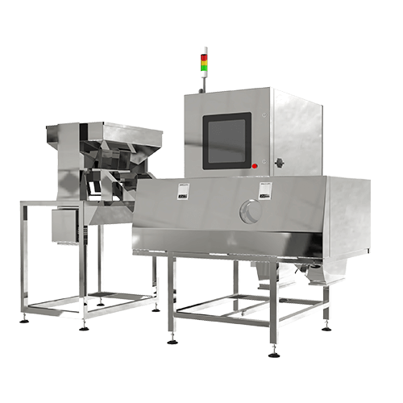
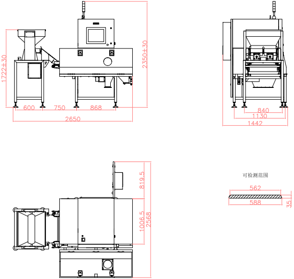
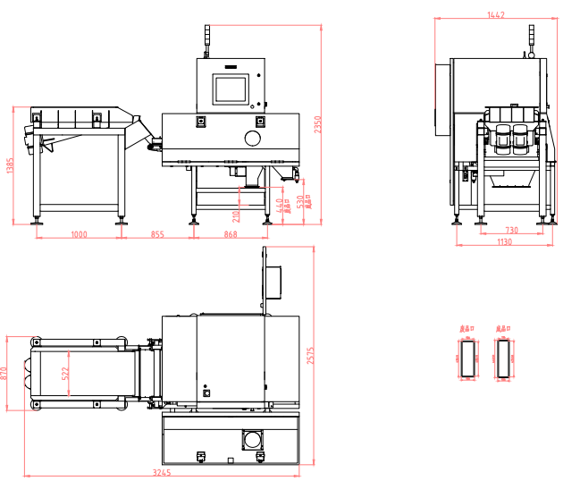

80XS机型产品信息

（1）标准振动器尺寸（点击查看）

关闭窗口
（2）振动筛尺寸（点击查看）

关闭窗口
名称：大产量一体式多用途X射线检测机
检测灵敏度：不锈钢球(SUS ball)≥Φ0.3mm
喷阀数：80个
防护等级：IP54
整机重量: 700kg
皮带宽度: 620mm
人机界面：17寸液晶触摸屏
传送带速度：10-100m/min，可调
受检品尺寸：宽度≤588mm 高度≤35mm
外型尺寸: 2650mm×1442mm×2350mm±30
设备特色: 在检测精度不降低的情况下
同比60XS产量提升30%左右
射源: 自制射源寿命一般在8000～10000个小时
电源: 单相AC220V±10%， 50/60Hz，2.5kW
产量参考:
大米约8～10吨/小时，黄豆约6～7吨/小时
花生约5～6吨/小时，南瓜籽约4吨/小时
葵花籽约2.5～3吨/小时，巴旦木约1～1.5吨/小时
核桃约1～1.5吨/小时，夏威夷果约1.2～1.7吨/小时
碧根果约在1.2～1.7吨/小时，PET瓶片1～1.5吨/小时